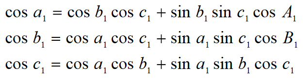
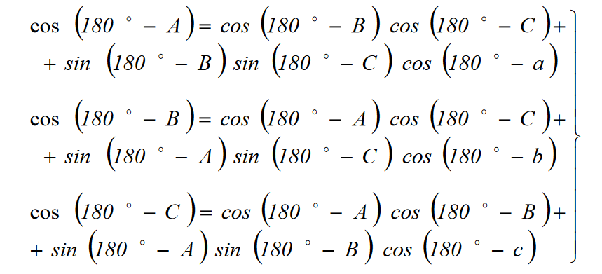

§ 3.1 Wzory na cosinusy boków i kątów trójkąta sferycznego
Rozważmy, który przedstawia trójkąt ABC na kuli o promieniu równym jeden i środku w punkcie O. W wierzchołku A poprowadzono styczne AE i AD do boków c i b trójkąta sferycznego. Styczne te przecinają się w punktach E i D z przedłużeniem promieni kuli, które przechodzą przez wierzchołki B i C.
Stosujemy twierdzenie cosinusów dla płaskich trójkątów AED i OED:Przyrównując prawe strony równań, otrzymujemy:
Biorąc pod uwagę, że promień kuli jest równy jeden, z trójkątów prostokątnych OAE OAD otrzymujemy:
Ponieważ

otrzymujemy:
Mnożymy wszystkie warunki ostatniego równania przez cosb * cosc i ostatecznie mamy:
Budowa jest możliwe, jeśli każdy z boków b i c jest mniejszy niż 90°. Dlatego wyrażenie należy uogólnić na przypadek, gdy trójkąt ma boki większe niż 90°.
W tym celu rozważ rys . Pokazuje ABC, który ma boki b>90° i c>90°. Jeśli będziemy kontynuować te boki, aż przetną się w punkcie D, to otrzymamy sąsiedni trójkąt DBC, w którym każdy z boków 180° − b i 180° − c jest mniejszy od 90°.
Następnie dla trójkąta DBC formuła przyjmuje postać
cos(a) = cos(180° − b)cos(180° − c)+sin(180° − b)sin(180° − c)*cos A
albo:
cos(a) = cos(b)cos(c)+sin(b)sin(c)*cos A
W końcu dostajemy:

Zatem cosinus boku trójkąta sferycznego jest równy sumie iloczynów cosinusów pozostałych dwóch boków i sinusów tych samych boków, pomnożonej przez cosinus kąta między nimi.
Aby otrzymać wzory na cosinusy kątów trójkąta sferycznego, zapisujemy stosunki boków trójkąta A1B1C1, który jest biegunowy względem trójkąta ABC:
Zgodnie z główną właściwością wzajemnie biegunowych trójkątów ABC i A1B1C1:
Podstawienie tych równości do poprzedniego wzoru daje
Korzystamy ze wzorów na redukcję funkcji trygonometrycznych
sin(180° − a) = sin(a), cos(180° − A) = -cos(a),
a także pomnóżmy obie części każdego stosunku przez jednostkę ujemną. W rezultacie otrzymujemy wzory na cosinusy kątów trójkąta sferycznego.
Zatem cosinus kąta trójkąta sferycznego jest równy różnicy między iloczynami sinusów tych samych kątów pomnożonych przez cosinus boku między nimi i cosinusy pozostałych dwóch kątów.
Rozwiązanie:
Rozważmy trójkąt sferyczny BPA. Ponieważ CD to łuk równika, P to biegun, a następnie boki ΔBPA są równe AP = 90° - ∠PAO = 90° - φ; BP = 90° - ∠PBO = 90° - φ'.
Różnica długości - kąt ∠BPA = Δλ, równa się λ2 - λ1 = 55°36’ - 49°30’ = 6°06’
Aby określić ortodromię, używamy wzoru na cosinus boku trójkąta sferycznego
cos(a) = cos(b)cos(c)+sin(b)sin(c)*cos A
W naszym przypadku wzór przyjmuje postać: